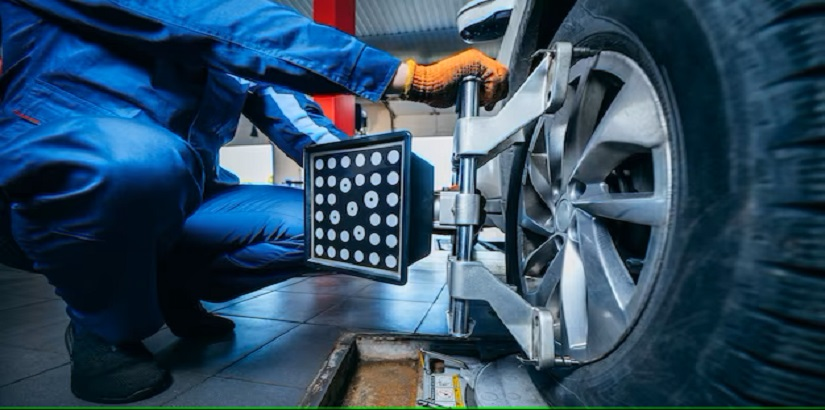
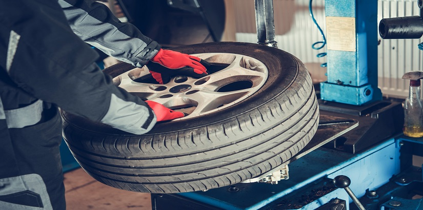
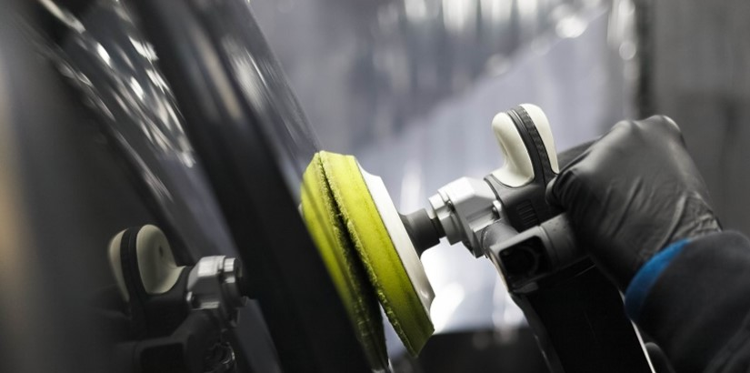

What do we offer?
Our garage deals with expert personnel to ensure credible and efficient car services to our esteemed customers.
Tire services
- Tire repairs
- Wheel alignment
- Tires Rotation
- Tires change
If you have a punctured tire or damaged tires, our technicians can assess the extent of the damage and make recommendations on the possible fixes. We use the best-practices to deliver this particular service; practices which are industrial-approved to be eficient and safe application

Fig2: Technician aligning a client's wheel
To make the best out of a driving experience, one needs proper wheel balancing to ensure a smooth and luxurious drive. We are adequately equipped with state-of-the-art equipment, purposely intended to ensure your wheels are well-balanced to give you a bumpy-free ride.
Need some tire rotation? Look no further because our technicians offer wheel rotation according to the manufacturer's recommendations to further improve your driving experience, especially during taking turns.

Fig1: Mechanic changing a tire for one of our customers
Here at autocorrect, we understand the essence of a driver having a smooth and tranquil car ride. We ensure this, by bringing adequately skilled technicians in this particular field to assist in delivering this. Having a backbone of expertise, we assure our esteemed customers a hundred percent assurance of delivering timely and credible services to meet your requirements.
Body works
- Body polish
- Body upgrades
- Bumper installation and upgrade
- Spoiler installation and upgrade
- Rooftop spoiler installation and upgrades
- Car design and overlook upgrades using vinyl paints, matte and gloss.

Fig2: Technician car body polishing a client's car
Here at autocorrect the garage, we offer body polishing on our customer's vehicle, not only to improve the car's aesthetics but also to give the owner a new-car sensation, which not only does it boost their courage but also gives them an edge over rivals especially in sporting vehicles.
We offer a variety of body upgrades available for the car owner to not only improve
car aesthetics, but also improve the car's performance.
We offer:
To join the crew or if in need of car tire services, feel free to book an appointment or visit our offices as shown in Contacts